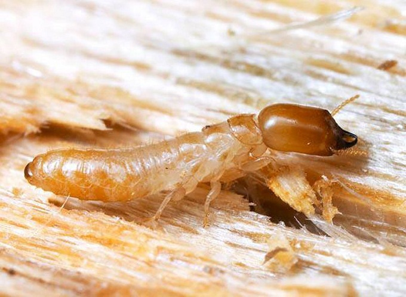
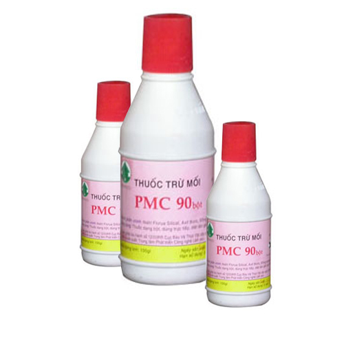
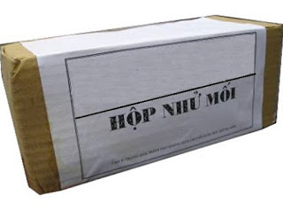
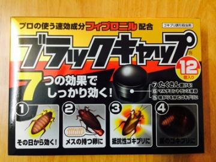

Mối là loài côn trùng hại gỗ rất mạnh, chúng phát triển nhanh trong các công trình xây dựng, nhà ở. Ngoài ra chúng còn phá hoại cả một số vật dụng có thành phần Cellulose như giấy, vải, chăn màn, ... Để diệt mối tận gốc trong nhà, các gia đình cần phải nắm vững các kiến thức về diệt mối mọt, nếu không chắc chắn có thể liên hệ công ty để được xử lý kịp thời. Sau đây là một số phương pháp và kỹ thuật diệt mối cơ bản.
Nguyên vật liệu diệt mối gồm: hộp nhử mồi, thuốc diệt mối PMC 90. Hộp nhử mối nêu không mua được thì có thể tự làm bằng bìa các tông kích thước rộng 12cm, cao 12cm, dài 28cm bên trong chứa các thanh gỗ thông trắng (bạch tung) hoặc gỗ trám, bồ đề có kích thước khoảng dầy 1cm, rộng 5cm, dài 25cm xếp khít với nhau, lưu ý là không nên dùng loại gỗ đã bị mốc. Ở những nơi không kiếm được gỗ thì có thể dùng bã mía, chiếu rách thay thế
Phương pháp làm
Quan sát trong nhà để tìm điểm mối xuất hiện thường xuyên, cần chú ý nhất ở các chỗ khuất như gầm gường, chân cột, chân khuôn cửa, nẹp cửa để đặt hộp nhử mối vào. Nếu điểm mối xuất hiện không ở dưới đất mà ở trên tường thì đóng đinh để treo hộp vào tường. Hộp nhử mối phải đặt ép sát vào tường một cách chắc chắn, số lượng hộp nhử mối đặt trung bình 4 hộp cho phòng có diện tích 20m2.
Để hộp nhử từ 15 đến 20 ngày, trong suốt quá trình này, tuyệt đối không được mở hộp ra xem hay động chạm vào hộp. Ta có thể nhìn thấy mối vào hộp bằng cách quan sát mép hộp nhử thấy có vết đất đắp lên.
Sau khoảng thời gian trên là thời điểm phun thuốc, bóc hộp nhử ra (sẽ có rất nhiều mối ở trong đó) lấy thuốc bột PMC 90 nhẹ nhàng rắc hoặc xịt vào mối ở trong hộp. Thuốc được xịt vào mối phải đều, tránh trường hợp con thì dính nhiều thuốc quá, con thì không có. 100g thuộc PMC 90 có thể phun xịt đủ cho hai hộp thử. Khi phun thuốc xong lại nhẹ nhàng để hộp nhử mối vào chỗ cũ để cho mối đã dính thuốc trở về tổ (ở dưới lòng đất). Những con mối này sẽ mang theo thuốc trên mình về cả tổ, dẫn đến toàn bộ tổ mối bị tiêu diệt.
Kiểm tra và dọn vệ sinh hiện trường
Sau 5 ngày kể từ khi phun thuốc, kiểm tra tất cả các điểm mối xuất hiện trong nhà một lần nữa, nếu vẫn còn mối chứng tỏ ta làm chưa hoàn thiện và còn sót lại một tổ mối nào đó chưa bị tiêu diệt hết, phải tiến hành làm lại như trên một lần nữa. Nếu không còn thấy mối, chỉ cần làm vệ sinh dọn bỏ tàn dư hộp nhử là được.
An toàn lao động
Để đảm bảo an toàn cho con người, khi phun thuốc diệt mối người thao tác phải mang bảo hộ lao động như găng tay, khẩu trang, quần áo bảo hộ… Mặt khác không để thuốc dính hoặc bay vào bể nước hoặc đồ ăn thức uống của người và gia súc gia cầm. Sau khi phun thuốc và dọn bỏ hộp nhử đã phun thuốc phải vệ sinh người và quần áo bằng xà phòng trước khi ăn uống. Để tránh độc hại cho người và gia súc, phế thải của quá trình diệt mối phải được chôn cách xa khu dân cư và nguồn nước, không được tuỳ tiện đốt hoặc vứt xuống ao hồ.
THUỐC BÁN |
|
|---|---|
|  Giá bán: Liên hệ | Thuốc diệt mối |
|  Giá bán: Liên hệ | Hộp nhử mối |
|  Giá bán: Liên hệ | Thuốc diệt gián |